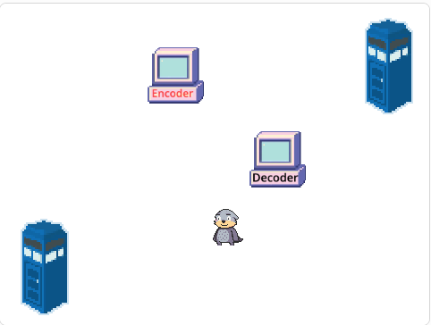
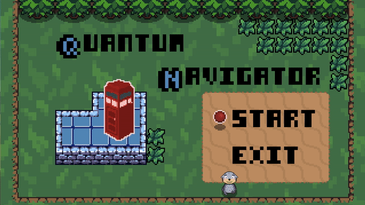

Ideas¶
Creating an Animation in Scratch¶
One option for your Dragons Den pitch is to create an animation. An easy way to do this is using Scratch, the programming language you’ve seen throughout the week. We’ve set-up a template with some of the characters from this week already built in, which you can use to get started if you’d like. Click here to get to the template, which looks a bit like this:

Here are some examples of animations you could make:
Animate a scenario where a quantum teleporter might be useful.
Animate a scenario where quantum error correction might be useful.
Imagine what it would be like to be in superposition.
Explore one of the ideas in the “explore quantum technologies” tab (hit “Next” above twice) using an animation.
If you’d like more guidance on ideas, you can talk to one of the camp leaders!
Patch a Video Game¶
Remember the Quantum Navigator game on day 1?

We created this game to help you explore some quantum ideas. Another project possibility is for you to suggest your own quantum-based video game. For example you can
Suggest a new level for the Quantum Navigator game, maybe including a new quantum idea!
Suggest a totally different game of your own making that uses an idea from quantum computing.
Whatever you choose to do, you can show us your idea using a drawing, slides, or however you’d like.
Explore Quantum Technologies¶
If you’d like to learn about more quantum technologies, you can check out the list of videos below. You could use the ideas here in your QuantumHub pitch, Scratch animation, or video game pitch, or you can choose to do a slide or other kind of presentation about one of these technologies. It’s up to you!
-Quantum Tunneling In the quantum world, objects can sometimes appear in unlikely places. Check out the video to learn about this strange “quantum tunneling” phenomena!
Quantum internet will have the power to enhance online security. We’d be able to have more secure communication, secure encryption (passwords), secure identification, and verifying position of users. That means less ‘hacking’, safer banking, and more.
Encryption, Cryptography, Key distribution. They’re all about transferring information safely. Quantum cryptography is an exciting quantum technology that may change the way we think about security!
While some quantum technologies, like key distribution, have the potential to make the online world safer and more secure, others potentially disrupt the security systems we have in place now.
This one you’ve learned about in the course, but you can learn more from the video and use this as part of your pitch!
Superconductors play a really important role in many types of quantum computing. What’s more, superconductors have applications that go beyond quantum computing. One application of superconductors is hoverboards!